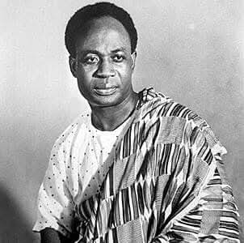

About Dr. Kwame Nkruma
Dr. Kwame Nkrumah, the founding father of Ghana, was born on September 21, 1909, in Nkroful, in the Western Region of the Gold Coast (now Ghana). He was a teacher, political theorist, and revolutionary who led Ghana to independence from British rule in 1957. He became the first Prime Minister and later the first President of Ghana. Known globally for his strong stance on African unity and anti-colonialism, he is celebrated as a key figure in the Pan-African movement.
Achievements
- Led Ghana to independence on March 6, 1957 – the first sub-Saharan African country to do so
- Formed the Convention People's Party (CPP), a major political force in Ghana’s decolonization
- Became the first President of Ghana in 1960
- Championed Pan-Africanism and was instrumental in founding the Organization of African Unity (OAU) in 1963
- Introduced major developments in education, healthcare, and infrastructure
- Authored influential books such as "Africa Must Unite", "Consciencism", and "Neo-Colonialism: The Last Stage of Imperialism"